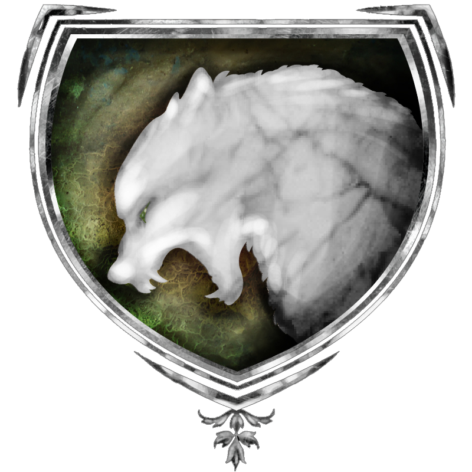

| Übersicht,
Newbies und Fragen |
|
Erste Eindrücke von SW (5  ) )
|
| Ceara Duana (RIP) |
Vielleicht sollte man gerade als Neuling das ein oder andere Angebote annehmen... außerdem findet man neue Kontakte, egal in welchem Bezug. Als Einzelkämpfer hat man es ziemlich schwer - gerade anfangs! Mit der Unterstützung von alten Hasen hast du schnell deine Skills oben und kannst dich an mehr versuchen. |
21.08.13 18:36
|
|
Agathe Wolfskopf
 |
Soviel ich sehe, wurde in erster Linie das Weghauen von Anfänger-Nestern kritisiert. Dieses Problem ist allgegenwärtig und hat nichts damit zu tun, ob man Einzelkämpfer ist.
Monster anhauen, mit 1 Char unterstützen... damit kann man im Kampf schon helfen, vorausgesetzt das Monster ist anfängertauglich genug, damit zumindest die fehlenden Treffer gelandet werden können.
Wenn man jedoch kein einziges Monster alleine besiegen kann, weil die Anfänger-Nester sofort umgenietet werden, verdirbt das nunmal schnell den Spaß, da kann ich Caramel gut verstehen. Er ist bei Weitem nicht der Erste mit dem Problem. |
21.08.13 20:02
 |
|
Altan Stormwind
 |
als Neuling einfach mal den Gaia HP bei Lager West besuchen, dort gibt es immer Ratten und nur Neulinge kommen rein...
solche Tipps und mehr kann man von den Alten bekommen und ich finde man hat endlich wieder alle Möglichkeiten, da das Blockdenken kaum noch Einfluss auf die Scherbenpolitik hat...
|
21.08.13 20:15
|
|
Kittin Silberfang
 |
Tja, es gibt genug verwahrloste Inseln und Gegenden mit "Schrottnestern". Ansonsten sich einer Gruppe anschließen und von den Synergien profitieren. Das ist in Scherbenwelten essentiell. |
21.08.13 20:16
|
|
Radalitz Trollblut
 |
Gibt noch bei Panama einen sehr guten Dungeon für Anfänger bis 75k Kampfruhm mit Skeletten drin. 4-6 Skelette maximum. Einfach Bluemchen oder Goldenes hierzu fragen. Dungeon ist recht klein und Gasthaus steht vor der Tür.
Immer eine Gruppe vorhanden und nächste kommt, sobald die letzte umgehauen wurde. |
21.08.13 21:48
|
|
Klaus Störtebeker
 |
Im RPG Forum wird doch sogar ein Neulingstrainingsgebiet angepriesen ... |
21.08.13 22:37
|
|
Icke wieder
|
Für Fragen und bei Problemen haben sich im Forum allerdings nun wirklich etliche Mentoren zur Verfügung gestellt.
SW hat kein Belohnungssystem wie andere Spiele, hier musst du dir deinen Erfolg hart erarbeiten und hast eben auch mit Mitspielern zu tun. Überraschung!
Es gibt hier viele Logik-Hürden und wegen der lückenhaften Wissensbank liegen oft mehr Steine im Weg als nötig.
Das Fazit wurde schon genannt: Schließ dich Leuten an, die sich auskennen, die dir was erzählen können, die dir helfen werden. Die gibts auch in jeder Größe, da brauch man sich nicht gleich dem größten Block anschließen, auch wenn man hier am erfolgreichsten vorwärts käme... :PP |
22.08.13 7:05
|
|
Übersicht,
Newbies und Fragen
|